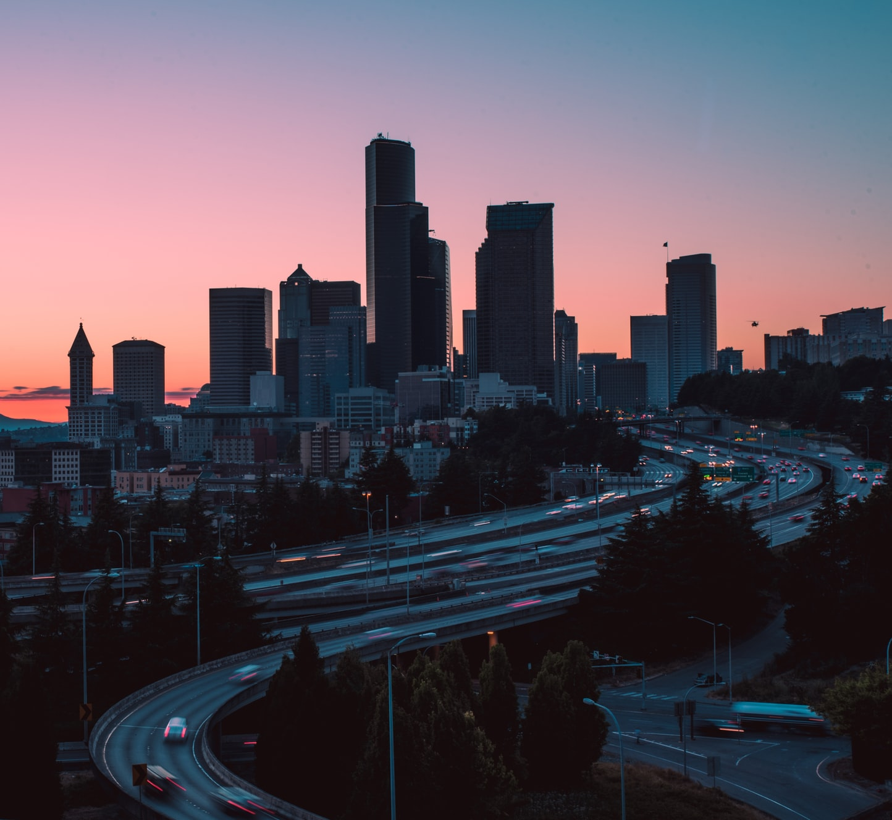

Sunset Air is a uniquely environmentally-focused local airline that runs in the Pacific Northwest. Sunset Air ensures that customers are guaranteed a high quality, yet affordable, travel experience. Sunset Air hopes to create magical and memorable moments for all families, with a vision to become one of the industry’s leading providers of excellent airline services.
The founders originally established Sunset Air in Seattle, Washington with hopes of providing an affordable alternative to expensive tickets after noticing decreasing incomes in their hometown. That, coupled with their efforts to improve the world’s mounting environmental issues, led to the founding of one of the safest, most environmentally-aware airline companies in the Pacific Northwest.
Sunset Air has always highly valued the importance of decreasing one’s carbon footprint in our everyday lifestyles. Average airplanes produce more than 50 pounds of carbon dioxide for every mile and Sunset Air has always strived to reduce such a detrimental effect on the globe. Our paper straws, biodegradable napkins, bamboo cups, and biofuel, as well as solar panels, are just a few instances of how we remain committed to minimizing the negative impact on the environment. Sunset Air promotes the benefits of reducing pollution while inspiring others to join globally beneficial endeavors.